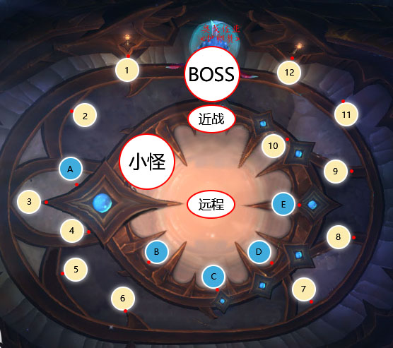

BOSS是个流程性BOSS，但是犹豫小怪刷新跑路时间导致时间轴却存在着不稳定性，一般情况下技能顺序为孵化培养液，小怪，流液渗透，弧光电流；
1. 孵化培养液每跳伤害会很高，治疗压力会越来越大，每单数轮点名2人，双数轮点名3人；
2. 弧光电流每30s一次，中培养液的人需要出人群分散，避免培养液传染增加治疗压力，其它时间需要集合输出；
3. 中培养液的人会越来越多，建议分散位置需要固定，每个人需要记清楚自己的位置
4. 培养液DEBUFF会在进入P2以后重置；
5. 小怪会不停的出，33-36秒刷一波；
6. P1需要在第7次弧光电流时打进转阶段；
7. 关于治疗有两种交减伤的方法，每次电流后交或每次小怪第2次AOE后交，根据实际情况进行分配；
8. 如果BOSS转阶段，小怪没有清完，可以选择拉住小怪，带到下阶段位置处理。
P1分散站位示意图

1. 老老实实的跑，拒绝一切骚操；
2. SS可以开血跑，到位后给后面的人放好传送门；
3. 合理利用一切加速技能；
4. 人员到位以后再打断BOSS读条！
1. 进二阶段以后，所有人身上的DEBUFF会重置，BOSS的时间轴也会重置
2. 中水舞长枪的一定要去场地边缘放水；
2. 女巫的技能全部需要打断，安排至少5个打断处理；
3. 小怪的分摊全，可以选择所有人去吃，或者T开技能去吃；
4. 人员到位以后再打断BOSS读条！
5. P2场地很大，弧光电流中DEBUFF的注意出去分散即可。
1. 整场战斗中所有的羊水喷发与小怪的分摊技能都可以使用无敌类技能单吃，包括QS的无敌，LR的龟壳，FS的冰箱，DH的无敌；
2. 羊水喷发为自然伤害，理论上DZ斗篷，DK反魔法罩可单吃。
奥戈佐亚用莫比触须对目标进行钉刺，使其受到的所有伤害降低10%。该效果可叠加。
达到10层后，施加麻痹心悸。
说明：T需要注意的技能，BOSS给T的debuff到达9层时换嘲。
奥戈佐亚的毒液流进目标的心脏，立即消灭玩家。
说明：就是BOSS给T的debuff到10层的时候，T就没了
从上方竞技场内喷洒脓液，对每个落点附近6码内的敌人造成415,138点自然伤害。
说明：躲开地上的篮圈，俗称“跳舞”阶段，跳不好就没了。
奥戈佐亚随机用体液浸透数名玩家，每秒造成34,595点自然伤害。
说明：BOSS随机点名给个DEBUFF，奶妈加油，相信自己可以的。
奥戈佐亚引导电流，穿过所有被孵化培养液影响的敌人，最多弹射到3个目标身上。
此技能造成86,554点自然伤害并传递孵化培养液给没有该效果的目标。
说明：BOSS对所有有DEBUFF的人，对它用类似闪电链的技能，如果中了闪电链技能的人没有DBUFF，闪电链会顺表给他上个DEBUFF。
奥戈佐亚不断召唤虚悯者之潮来帮它。
说明：就是会不停的出小怪，每次3只。
奥戈佐亚强化15码范围内的盟友，使他们造成的伤害提高50%，受到的伤害降低50%。
说明：把BOSS和小怪拉远点就好。
一阵爆裂震击席卷整个竞技场，对所有敌人造成41,514点自然伤害。
说明：小怪会AOE,奶妈加油，相信自己可以的。
虚悯者死亡后，它的羊膜囊会在5秒后爆炸，对命中的玩家造成276万点自然伤害，对其它所有玩家造成103,865点自然伤害。
如果没有命中任何玩家，就会引发羊水喷发。
说明：小怪死后留下的水有人踩了以后会AOE,奶妈加油，相信自己可以的。如果没有有踩，就释放灵魂。
立即对所有玩家造成103万点自然伤害，并且每2秒额外造成345,766点自然伤害，持续30秒。
说明：小怪死后留下的水如果没有有踩，就释放灵魂。
奥戈佐亚会离开孵化室并前往位于下方的纳迦内庭。所有【孵化培养液】的层数都会重置。
剧毒纤维剥离了孵化场的墙体，击退落点附近3码内所有玩家。
说明：地上的小蓝圈躲开。
孵化场的地面上散落着流出液体的不稳定的蛋。在5码内的玩家会被击退，并且受到34,599点自然伤害。
说明：对开蛋，很明显的圈，不要害人害己。
敌法纳迦孵化场后，奥戈佐亚试图唤醒孵化场内的所有居民！可以打断。
说明：这个技能如果不打断，就需要释放灵魂。如果打断的时候，还有人不在BOSS面前，那些人需要释放灵魂。
说明：跟一阶段一样。
说明：跟一阶段一样。
对一名敌人造成138,486点物理伤害。
说明：就是治疗需要加好血。
施法者标记一名随机敌人，4秒后向其投掷一直水流三叉戟。水流三叉戟将在冲击点生成狂怒急流，每1秒对范围内的玩家造成51,915点自然伤害。
说明：被点名的人远离人群，把水圈放在场边，其他人不要碰。
闪电箭对三个随机敌人造成相当于武器伤害150%的自然伤害。
说明：打断。
一股风暴能量脉冲使所有敌人昏迷，持续3秒。可打断技能。
说明：打断。
一次撼天动地的践踏，造成207万点物理伤害，由14码内所有玩家分担。
如果没有玩家被践踏集中，则会导致震颤回响。
说明：需要有人去分摊。
如果没有玩家被震波践踏所击中，震荡波会在孵化场中回荡。该技能对所有玩家造成345,766点自然伤害。
说明：就是上面的技能如果没有人在BOSS的圈里，就需要释放灵魂。